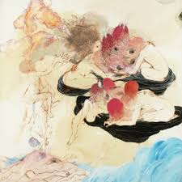
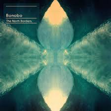
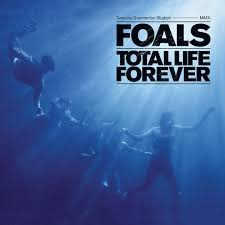

"Il aimait particulièrement rester suspendu au plafond ; c'était tout autre chose que d'être allongé sur le sol ; une oscillation légère parcourait le corps ; et dans l'état de distraction presque heureuse où il se trouvait là-haut, il pouvait arriver que Gregor, à sa grande surprise, se lâche et atterrisse en claquant sur le plancher." La Métamorphose, F. Kafka
|  |
Future IslandsAmerican synthpop band based in Baltimore, Maryland, and signed to 4AD, currently comprising Gerrit Welmers (keyboards and programming), William Cashion (bass, acoustic and electric guitars), and Samuel T. Herring (lyrics and vocals). |
|  |
BonoboSimon Green (born 30 March 1976), known by his stage name Bonobo, is a British musician, producer and DJ based in Los Angeles.[2] He initially debuted with a trip-hop aesthetic, and has since explored more upbeat approaches while experimenting with jazz and world music. |
|  |
FoalsFoals are a rock band from Oxford, England formed in 2005, consisting of lead vocalist and lead guitarist Yannis Philippakis, drummer and percussionist Jack Bevan, rhythm guitarist Jimmy Smith, and keyboardist Edwin Congreave. |